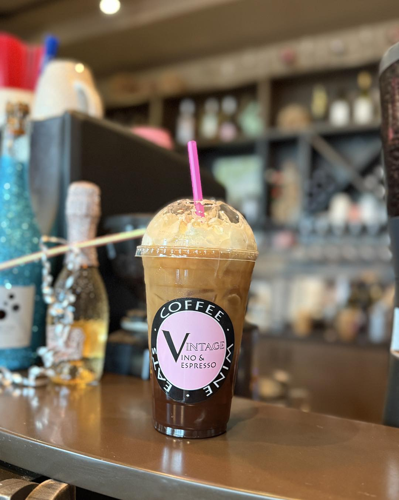
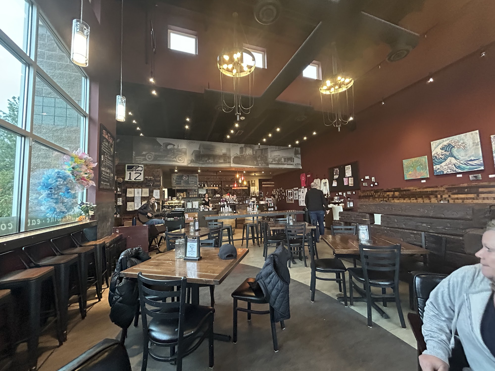
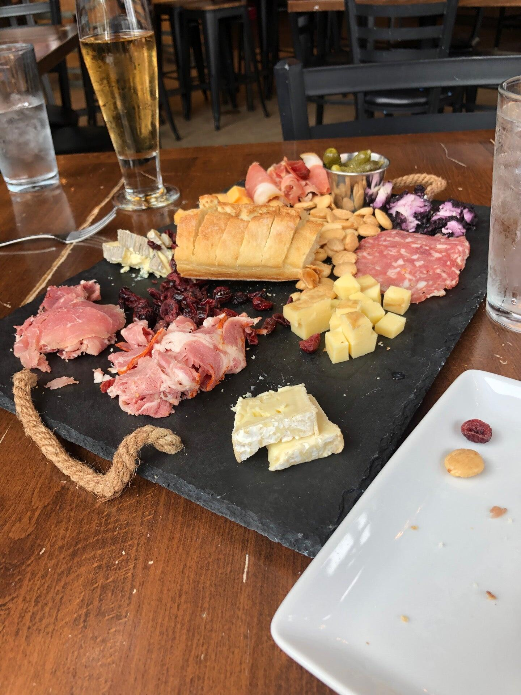
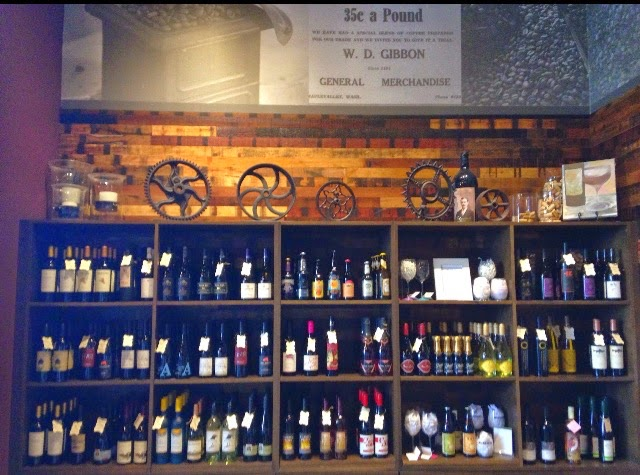
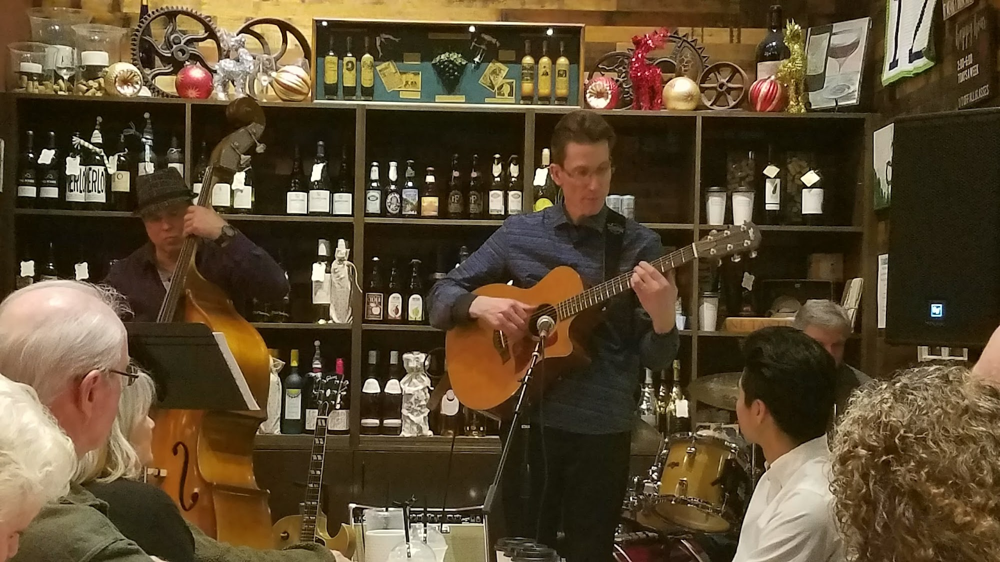
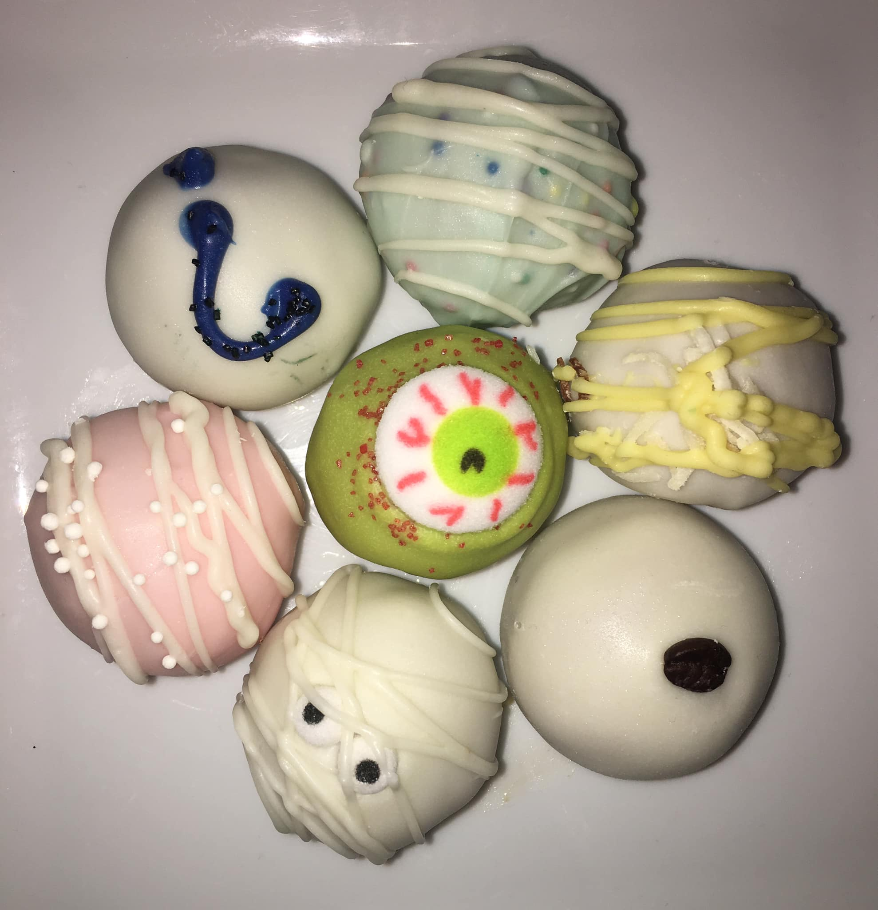
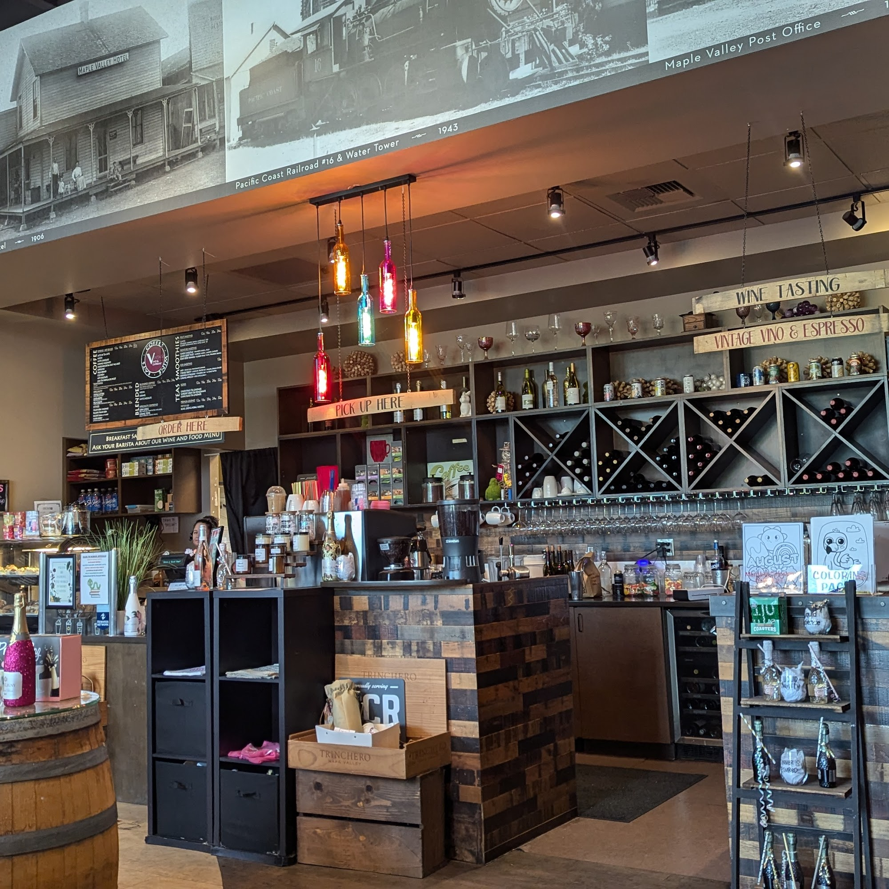

A coffee shop. A wine bar. Your kind of place.
Vintage Vino& espresso
The first sip.
The last laugh.
The place between.



From your morning cup to your evening glass.Espresso · Wine · Small plates · Live music
When to find us
A little time, well spent.
See today’s hours
24081 SE 264th St, Suite N-100
Maple Valley, WA 98038
Open in Maps ↗
- Monday6:00 AM – 7:00 PM
- Tuesday6:00 AM – 7:00 PM
- Wednesday6:00 AM – 7:00 PM
- Thursday6:00 AM – 7:00 PM
- Friday6:00 AM – 8:00 PM
- Saturday7:00 AM – 9:00 PM
- Sunday7:00 AM – 5:00 PM
Make yourself at home
Good things, all day long.
A quick coffee on the way. A bite with a friend. A glass of wine when the day is done.
Coffee & espresso
Espresso, iced coffee, tea and hot chocolate. Stop by the drive-through or take your cup inside.
A bite to eat
Breakfast sandwiches, bagels, small plates and boards to share. Ask the counter what’s fresh today.
Wine & beer
Choose a glass, settle into the room and let the conversation linger. Ask about the current selection.
Music & making
Live music and creative evenings bring people together. See the latest happenings ↗
A glimpse of Vintage
More than your usual stop.



Your kind of moment
What brings you in?
Your day starts here.
Espresso, iced coffee or a tea, with a drive-through for the days you’re on the move. See when to stop by ↓

A familiar place in Maple Valley
Pull up a chair.
There’s time.
A warm room, a good drink, and a reason to stay a little longer.
Vintage brings morning coffee and evenings over wine together under one roof. The shelves hold bottles, the counter has something good, and live music turns an ordinary stop into a night out.
Creative nights give neighbors another reason to gather. Find the current dates and details before you visit.
See the craft club ↗From the neighborhood
Get to know us through our guests.
4.1★★★★☆
On Google
Coffee breaks, evening conversations and the little moments in between. Read what guests have to say.
Read our reviews ↗We’ll see you here
A question before you stop by?
For today’s offerings, evening hours or what’s happening next, give the cafe a call.
Your next good moment
See you at Vintage.
Make a little room in your day.